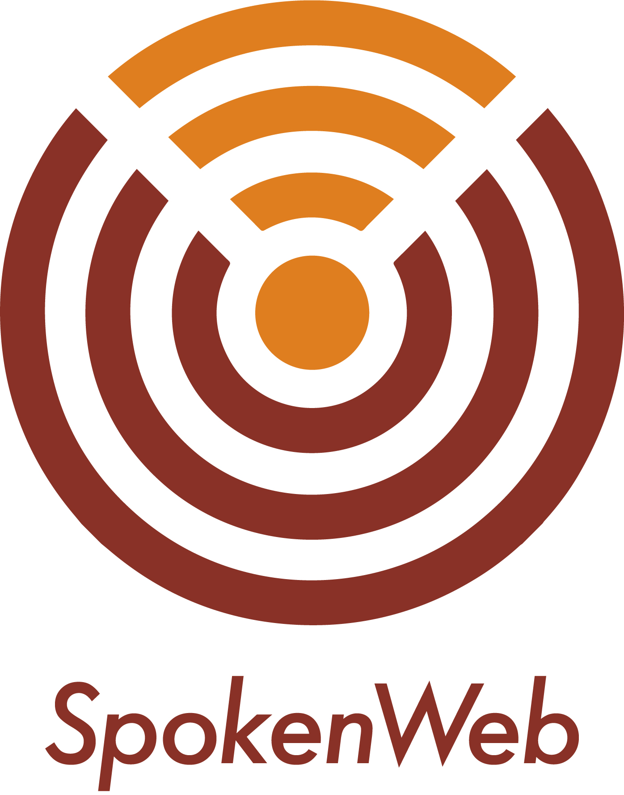
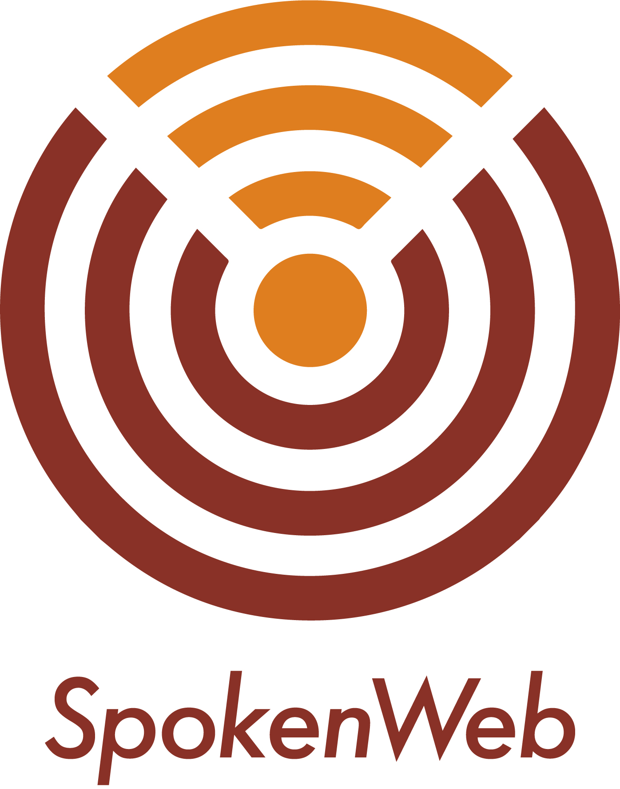

News and Events
Here's what's happening in the Studio (since May 2021):
- 26 January: Congrats to Tracey, who is now a programmer and consultant at UVic's Humanities Computing and Media Centre. We're so proud!
- 11 January: Samuel is teaching English 146, "The Literature of Our Era," this term.
- 10 January: Julie is teaching Gender Studies 329, "Theorizing Hormones," this term.
- 5 January: Congrats to Madyson, who received a Peter and Ana Lowens UVic Special Collections Fellowship.
- 9 December: Many thanks to Julie for their wonderful "Player Stories" talk on "Coded Bodies: Player-Narrative Intertextuality in With Those We Love Alive."
- 24 November: Join us tomorrow via zoom for Abby Fry's "Player Stories" talk, "Getting in the Game."
- 16 November: Many thanks to Asia, who facilitated a "Player Stories" session today on sound design in games.
- 12 November: We're thrilled to announce our "Player Stories" speaker series for 2021-22.
- 29 October: Samuel is presenting alongside Bethel Sileshi today as part of the UVic English FYI event, "Racial Ontology and the Subjunctive Activism of the Privileged."
- 19 October: A hearty welcome to Asia Tyson and Braeden Hallman, who joined the Studio this term.
- 1 October: Julie is giving a talk today at SLSA 2021, hosted by the University of Michigan, Ann Arbor.
- 20 September: A hearty welcome to Madyson Huck, who joined the Studio this term.
- 31 August: Samuel, Julie, and Jentery are prepping for a new academic year of research.
- 30 August: Julie is teaching English 146 this term.
- 30 August: Samuel is teaching ATWP 135 this term.
- 30 August: Jentery is teaching English 230, "Contemporary Media and Fiction," this term.
- 30 July: Tracey joined UVic's Centre for Academic Communication (as a writing specialist) as well as the Academic and Technical Writing Program (as an instructor).
- 21 July: Jentery visited UCSB's "Envisioning the Digital Archive" seminar to give a talk.
- 19 May: Samuel, Julie, Faith, and Jentery co-presented at SpokenWeb 2021. The title of their talk was "Designing Prompts for Literary Audio Studies."
- 10 May: Congrats to Samuel, who passed his focused field PhD exam in Postcolonial Media Fiction with distinction.
- 3 May: Congrats to Julie, who passed their focused field PhD exam in Technologies of / and the Hormonal Body with distinction.
Who We Are
We are a group of researchers who study the aesthetics and politics of media by blending theory and history with storytelling and prototyping:
- Samuel Adesubokan (English)
- Tracey El Hajj (English; graduated in 2020)
- Julie M. Funk (English and CSPT)
- Braeden Hallman (English)
- Stefan Higgins (English and CSPT; graduated in 2020)
- Madyson Huck (English)
- Hector Lopez (English; graduated in 2020)
- Faith Ryan (English; graduated in 2021)
- Alana Sayers (English; 2019-21)
- Jentery Sayers (English and CSPT; director)
- Lexy Townsend (English; 2020-21)
- Asia Tyson (English)
We value decolonization, situated knowledge, the space of place, and integrative approaches to media: old + new, analog + digital, still + moving, popular + experimental, immersive + meta.
We respectfully acknowledge that our studio is located on the unceded territory of the Lkwungen peoples and the Songhees, Esquimalt, and W̱SÁNEĆ First Nations, whose ongoing historical relationships with the land continue to this day.
What We Do
We identify pressing topics in media studies, articulate them as studio themes, research and write about them, prototype scenarios for them, and facilitate events to engage them. Our current themes are:
- Player Stories: examining how people document and narrate their experiences with games
- Uncanning Sounds: bringing literary audio from the past into the present
- Experimental Worldbuilding: imagining better worlds for games and playable fictions
If you'd like to know more about our research, then please don't hesitate to contact us or attend an event.
What We Aren't
We are not a blog, brand, dev team, fab lab, digital humanities project, or humanities computing centre. We do not offer courses, either, but if you want to learn about digital tools and methodologies, then we recommend contacting our amazing colleagues at the Digital Scholarship Commons (DSC), Obsolete Computing and Media (OCaM), and the Humanities Computing and Media Centre (HCMC).
Support and History
We are housed in the Faculty of Humanities at the University of Victoria; we partner with English, Visual Arts, the HCMC, and Cultural, Social, and Political Thought; and we collaborate with the DSC and Special Collections. We are members of the SpokenWeb project, and our research is supported by the Social Sciences and Humanities Research Council of Canada (SSHRC), the Canada Foundation for Innovation (CFI), and the SpokenWeb SSHRC partnership network. We began as The Maker Lab in the Humanities in 2012 and became The Praxis Studio for Comparative Media Studies in 2019. All work belongs to our researchers (not to the studio), and no position is unpaid.
Contact Us
We're located in UVic's Clearihue building. You can email our director, Jentery Sayers (he/him/his), at jentery@uvic.ca.
Thanks for visiting. We built this site with files from Mike Choi's "Paper" theme.
 
